السؤال 5

الجواب الصحيح: 2 و 4
هذا العلامة كتمنع الوقوف و التوقف.
من بعد العلامة غادي يصبح الوقوف و التوقف ممنوع.
25 سؤال
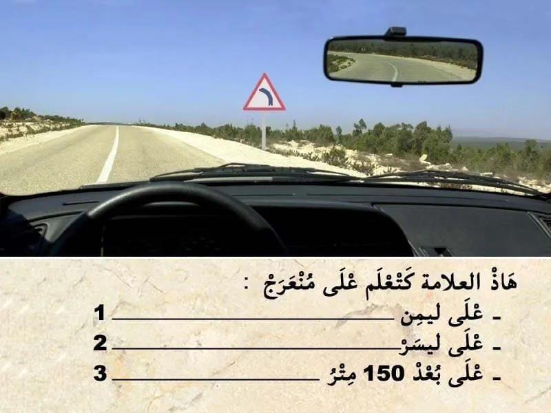
الجواب الصحيح: 2 و 3
هذا العلامة ديال الخطر.
-كتعلم على منعرج خطير على ليسر .
- الخطر خارج التجمع السكني كيكون على بعد 150 متر .
يعني الجواب الصحيح هو 23.
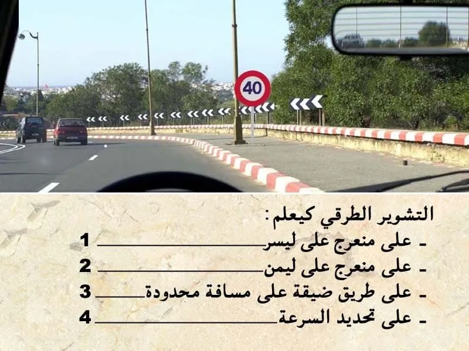
الجواب الصحيح: 1 و 4
التشوير الطرقي كيضم:
- اسهم بالازرق ، كتعلم على منعرج خطير على ليسر .
- علامة المنع . كتمنع السير بأكثر من 40 كلم في الساعة.
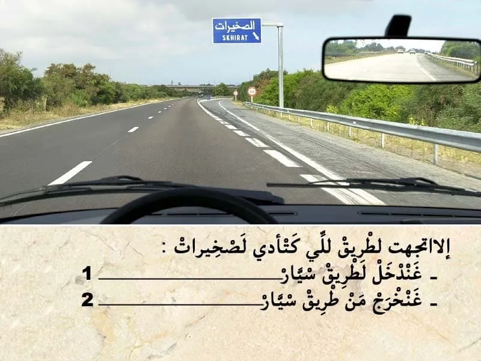
الجواب الصحيح: 2
هذا العلامة ديال الإرشاد. كتعلم على منفذ من الطريق السيار.
- السهم لي في اسفل لليمين ،كيعلم على الخرجة من الطريق السيار.
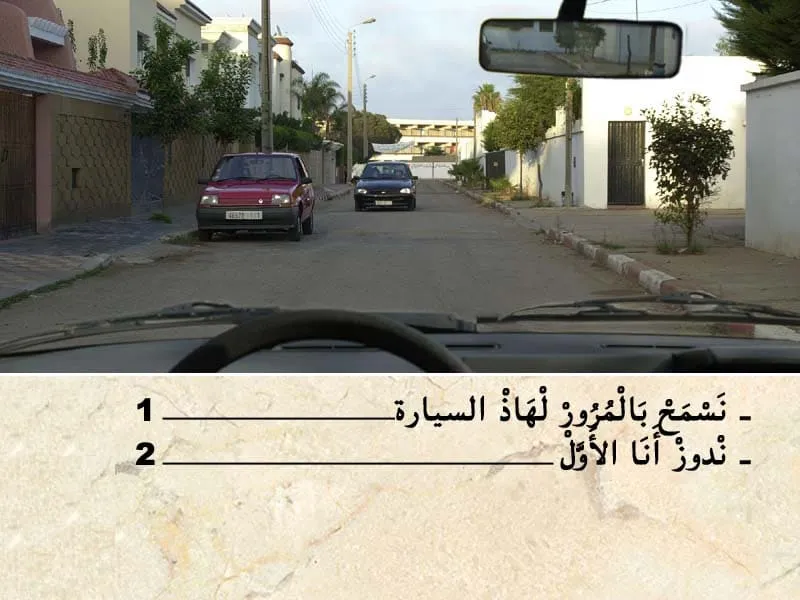
الجواب الصحيح: 2
في هذا الطريق حركة السير في الاتجاهين.
في هذا الحالة الجهة ديالي خاوية و الجهة ديال ليسر فيها السيارة الحمراء.
- واجب على السيارة الكحلة تشد ليمن و تعطيني حق الأسبقية.
ندوز انا الأول.
الجواب الصحيح: 2 و 4
هذا العلامة كتمنع الوقوف و التوقف.
من بعد العلامة غادي يصبح الوقوف و التوقف ممنوع.

الجواب الصحيح: 1
في هذا الحالة كاين هذا الراجل في ممر ديال الراجلين. و بالتالي واجب عليا نوقف و نعطي حق الأسبقية.
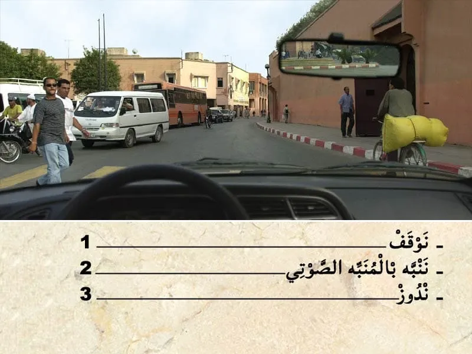
الجواب الصحيح: 1
من الواجب عليا نوقف و نعطي حق الأسبقية لهذا الراجلين.
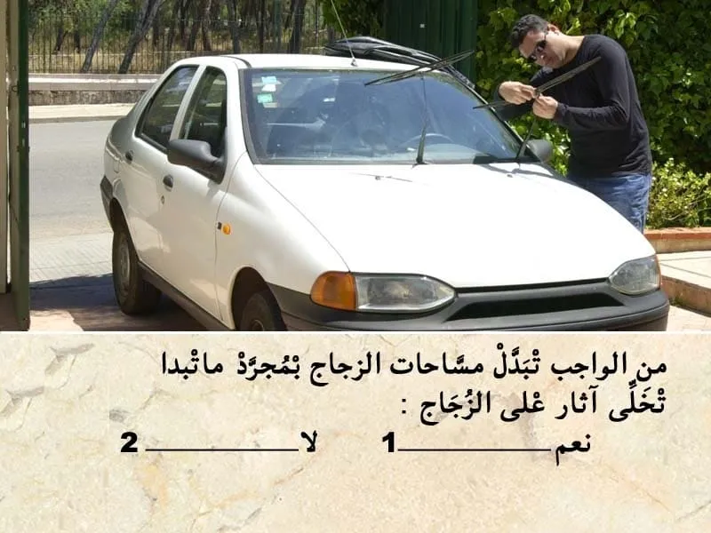
الجواب الصحيح: 1
مساحات الزجاج من الواجب المراقبة ديالها. و بمجرد متبدا تخلي آثار على الزجاج. يجب تغييرها.

الجواب الصحيح: 2
عند وجود هذا العلامة . كتكون مرفوقة بخط متقطع .
هذا الخط المتقطع كيعلم على المكان لي من الواجب عليا نوقف حداه باش نعطي حق الأسبقية للي جاي من ليمن و للي جاي من ليسر.
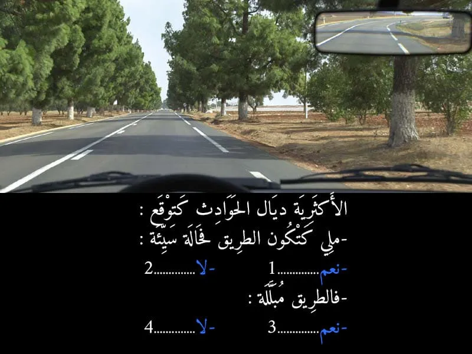
الجواب الصحيح: 2 و 4
من الأسباب الرئيسية لوقوع حوادث السير.
هو التهور و السرعة المفرطة.
و ليس حالة الطريق. الا كانت حالة الطريق سيئة من الواجب تخفيض السرعة .
ايضا الا كانت الطريق مبللة بالماء . من الواجب زيادة مسافة الأمان.
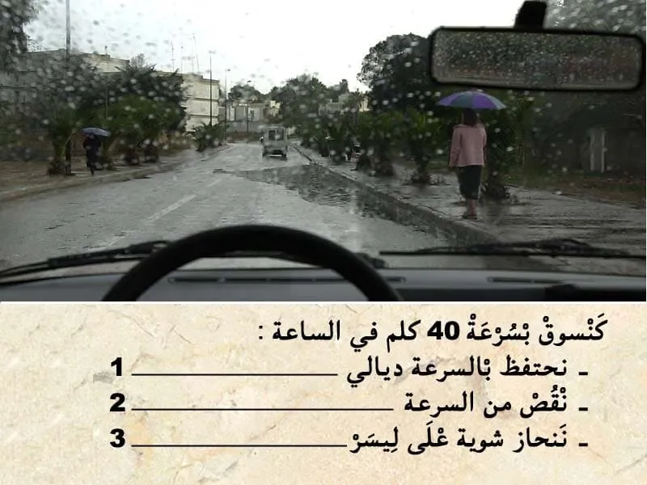
الجواب الصحيح: 2 و 3
في هذا الحالة الطريق قدامي مغمورة بالماء و في الجنب ديال الطريق كاين الراجلين و بالتالي من الواجب ننقص من السرعة . و ننحاز ليسر باش ما نأديش الراجلين بالماء .

الجواب الصحيح: 3
في علبة الادوية كيدل المستويات على نوع الخط :
- كيدل المستوى 1 على انني قبل ما نقوم بالسياقة واجب عليا نقوم بقراءة النشرة الدوائية.
- كيدل المستوى 2 على انه قبل ما نقوم بالسياقة
من الواجب عليا نستشر مع الطبيب او الصيدلي . باش نعرف واش يمكن لي نسوق الا خديث الدواء ولا لا.
- كيدل المستوى 3 على انه قبل ما نستأنف السياقة ,من الواجب عليا نستشر مع الطبيب فقط . باش نعرف واش يمكن لي نسوق الا خديث الدواء ولا لا.
يعني المستوى 3 فقط الطبيب هو لي يمكن ليه يعطيك الاذن باش تسوق.
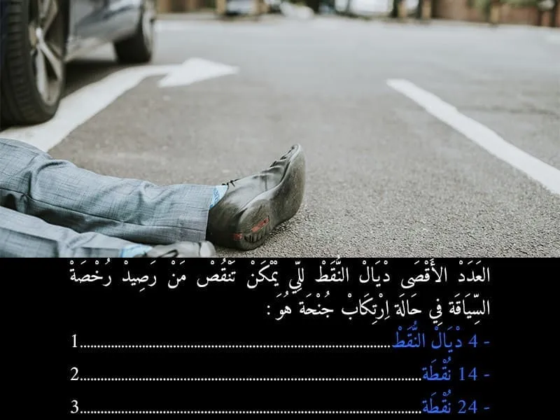
الجواب الصحيح: 2
العدد الاقصى لي ممكن يتم خصمه من رصيد رخصة السياقة هو 14 نقطة.
- القتل غير العمد مع ظروف مشددة، إثر حادث مروري

الجواب الصحيح: 1 و 4
التشوير الطرقي فيه خط متقطع . كيسمح بالتجاوز .
و لكن ممر الراجلين فيه هذا السيدة لي قاطعة الطريق و بالتالي ما يمكنش لي نتجاوز الآن.
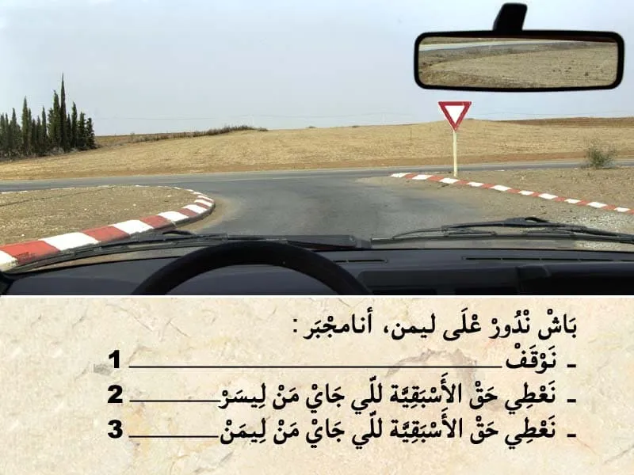
الجواب الصحيح: 2 و 3
هذا العلامة ديال اعطاء حق الأسبقية. كتعلم بلي واجب عليا نعطي حق الأسبقية في هذا ملتقى الطرق .
✏️ و بالتالي واجب عليا نعطي حق الأسبقية للي جاي من جهت ليمن .
✏️و للي جاي من جهت ليسر .
و حتى للي جاي في الإتجاه المعاكس في حالة كنت غادي ندور على ليسر.
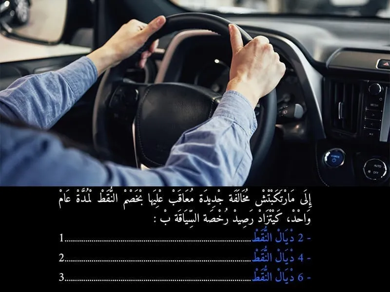
الجواب الصحيح: 2
إذا لم يرتكب صاحب رخصة السياقة مخالفة معاقب عليها بخصم النقط داخل أجل سنة من التاريخ الذي حاز فيه آخر مقرر قضائي بالإدانة قوة الشيء المقضي به ومن تاريخ أداء آخر غرامة تصالحية وجزافية، يسترجع أربع (4) نقط.
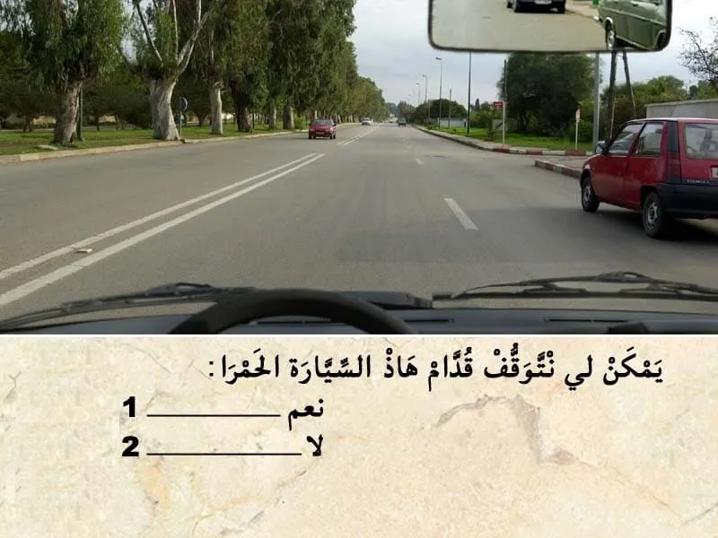
الجواب الصحيح: 2
يجب أن توضع كل مركبة في حالة وقوف أو توقف ولو لوقت قصير بكيفية لا تشكل خطرا على مستعملي الطريق.
يعتبر الوقوف والتوقف خطيرين خاصة عندما تكون الرؤية غير كافية في أو بالقرب من :
🚫 ملتقيات الطرق؛
2️⃣ عن 5 أمتار من ملتقى طرق في حالة عدم وجود أية علامة تشوير طرقي.
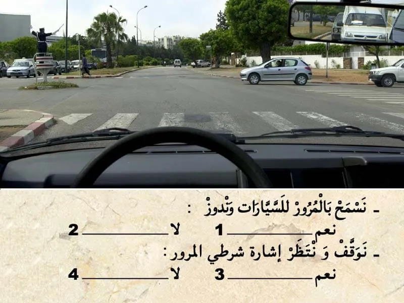
الجواب الصحيح: 2 و 3
في هذا الحالة الشرطي عاطي إشارة للسيارات لي على ليمن باش تدوز .
و بالتالي نوقف و ننتظر إشارة شرطي المرور.
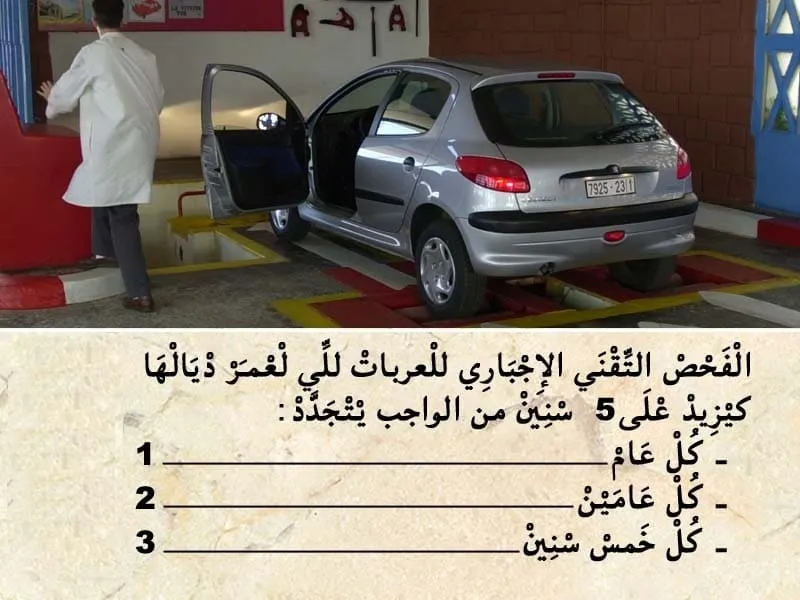
الجواب الصحيح: 1
المركبات الخاصة كيتم تجديد المراقبة التقنية كل سنة .
و المراقبة التقنية الأولى كتكون قبل متم 5سنوات من تاريخ أول شروع في الاستخدام,
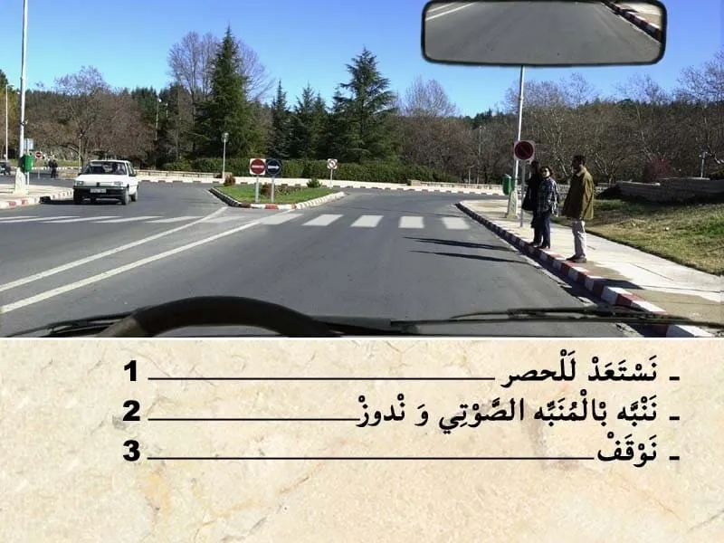
الجواب الصحيح: 1
فهذا الحالة كاين هذا الراجلين فجنب الطريق و بالتالي كاين خطر .
و بالتالي واحب عليا نستعد الحصر .
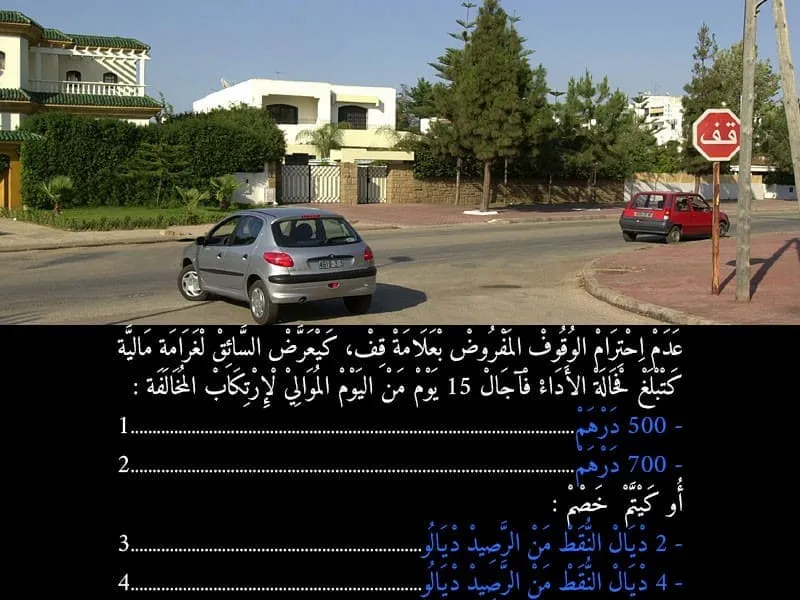
الجواب الصحيح: 1 و 4
عدم احترام الوقوف الاجباري المفروض بعلامة قف كيتعتبر مخالفة من الدرجة الاولى. و كيتم خصم 4 نقاط من رصيد رخصة السياقة . و غرامة مالية 700 درهم .
- في حالة اداء الغرامة في اجل 24 ساعة كيأدي السائق لي ارتكب المخالفة 400 درهم .
- أما في حالة الاداء في اجل 15 يوم فثمن الغرامة هو 500 درهم .
- أما في حالة عدم الادء في اجل 15 كتصبح الغرامة 700 درهم .
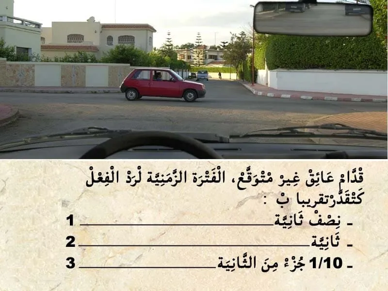
الجواب الصحيح: 2
الفترة الزمنية ديال رد الفعل في المتوسط هي 1 ثانية .
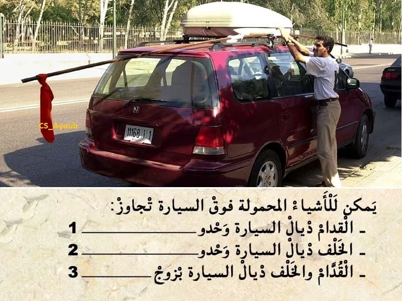
الجواب الصحيح: 2
الاشياء المحمولة فوق السيارة من الواجب ما تجاوزش اكثر من 3 متر . من الخلف ديال السيارة وحدوا .
و من الواجب نشير لوجودها بالنهار و حتى بالليل .
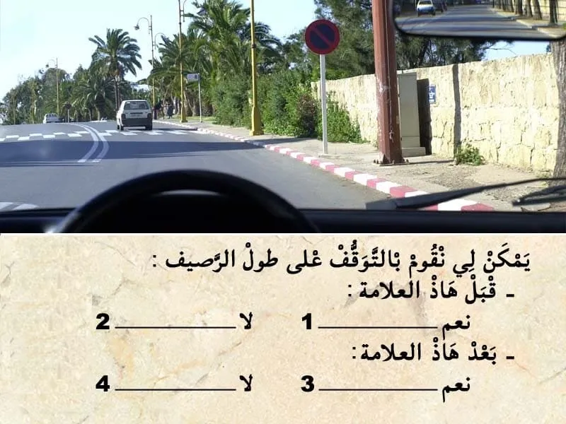
الجواب الصحيح: 2 و 4
التشوير الطرقي.
كيضم رصيف احمر و أبيض .
يعني ممنوع التوقف قبل العلامة . و بعد العلامة ايضا كاين رصيف احمر و أبيض .
بالإضافة الرصيف لي كيمنع التوقف .كاين هذا العلامة لي كتمنع التوقف بعد العلامة .
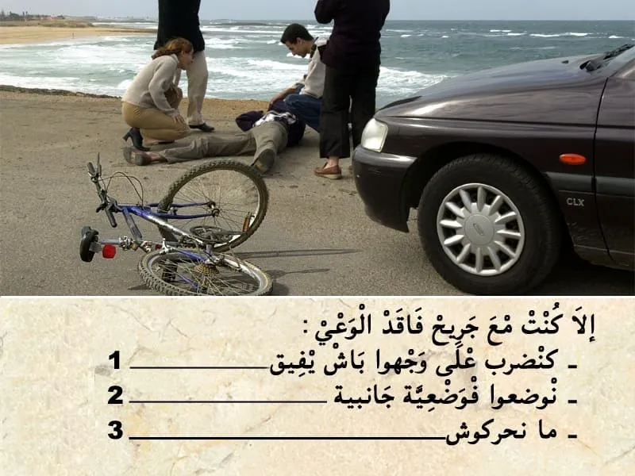
الجواب الصحيح: 2
إغاثة الجرحى :
💡 في جميع الحالات يجب:
✔ إزالة الأشياء التي تعيق التنفس بالنسبة للمصاب؛
✔ تغطية الضحايا وكذا الجرحى لتفادي البرد؛
✔ التكلم مع المصابين والاطمئنان على حالتهم و التهدئة من روعهم ومحاولة إبقائهم في حالة وعي.
💡 في حالة التوفر على شهادة للإسعافات الأولية يجب :
✔ وضع المصاب على الجانب الأيمن وفي الوضعية الصحيحة (الوضعية الجانبية للسلامة أو وضعية الإفاقة)؛
✔القيام بعملية التنفس الاصطناعي إذا اقتضت الضرورة ذلك.
يقدر عدد النفخات بالنسبة للبالغين من 12 إلى 15 نفخة في الدقيقة مقابل 24 إلى 30 نفخة في الدقيقة بالنسبة للأطفال.